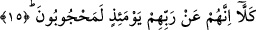

15. Hayır! Onlar şüphesiz o gün Rablerinden (O’nu görmekten) mahrum
kalmışlardır.
“Hayır, hayır!” Bu ifâde insanı “rayn/kalbi saran pas” hastalığına düşürecek fiilleri
yapmaktan alakoymakta ve engellemektedir. “Şüphesiz onlar” o yalan sayanlar “o”
insanların alemlerin Rabbinin huzurunda divan duracakları “gün Rablerini görmekten
mahrumdurlar.” Dolayısıyla Rablerini göremezler. Çünkü bu çirkin fiilleri nedeniyle
onların kalp aynaları pas tutmuş, pasın zulmeti kalplerinden kalıplarına işlemiştir.
Dolayısıyla tecelli nurunun tecelli edeceği mahal kalmamıştır. Halbuki mü’minler böyle
değildir. Onlar Allah Teâlâ’yı göreceklerdir. Zira mü’minlerin güzel fiilleri dolayısıyla
kalp aynaları parlak, saf hale dönmüştür. Dolayısıyla parlaklığın ve saffetin nuru,
kalplerinden kalıplarına sirâyet etmiş ve böylece onlar tecelli nurunun kalplerinde ve
kalıplarında yansımasına hazır hale gelmişlerdir. Onlar her cihetten “vücuh/yüzler”
olmuşlardır. Tıpkı vechu’l-bâki’nin varlığı gibi. Hatta onlar tümüyle birer göz hâline
gelmişlerdir.
Malik b. Enes (rh.)’a bu âyet-i kerimenin mânâsı sorulur. İmam Malik der ki: “Allah
Teâlâ’nın düşmanları onu görmekten mahrum olacaklarına ve göremeyceklerine göre
dostlarının kendisini görebilmesi için onlara tecelli etmesi gerekir.” İmam Malik, Allah
Teâlâ’nın görülebileceğini bu âyetteki ifâdenin zıt anlamından çıkarmaktadır. Onun
düşünce tarzı şudur: Şâyet Allah herkese tecelli etmeyecekse o zaman kâfirlerin onu
görmekten mahrum olmalarını söylemenin ne anlamı kalır? O zaman dostla düşman
arasında fark kalmaz.
Dersin ki Cennet misâfirlik yeridir
Ziyafet sâhibini görmedikten sonra ne olur ki?
Düşmanla dost arasında perde varsa
Bu ikisi arasındaki fark nasıl ortaya çıkar ki?
Rivâyet edildiğine göre İmam Şafii şöyle der: Allah Teâlâ gazabı nedeniyle bir kısım
insanlara tecelli etmeyeceğine göre bu gerçek bize, onun hoşnud olduğu bazı kimselere
tecelli edeceğine ve onların da Rablerini göreceklerine işâret ediyor.
Şeyhu’l-İslam Abdullah Ensari (rh.) bu âyeti şöyle tefsir ediyor: “O gün Rablerini
görmekten mahrumdurlar” ifâdesi, Rablerini rıza rü’yeti ile görmekten mahrumdurlar,
demektir. Çünkü Allah, insanlar daha Cennete girmeden önce mahşerde tecelli ettiğinde
şakî olan kimseler onu gazaplı olarak göreceklerdir.
Hüseyin b. Fadl (rh.) ise bu âyeti şöyle tefsir ediyor: Allah Teâlâ dünyada iken nasıl
onları tevhidinden mahrum kılmışsa âhirette de ru’yetinden mahrum kılacaktır.